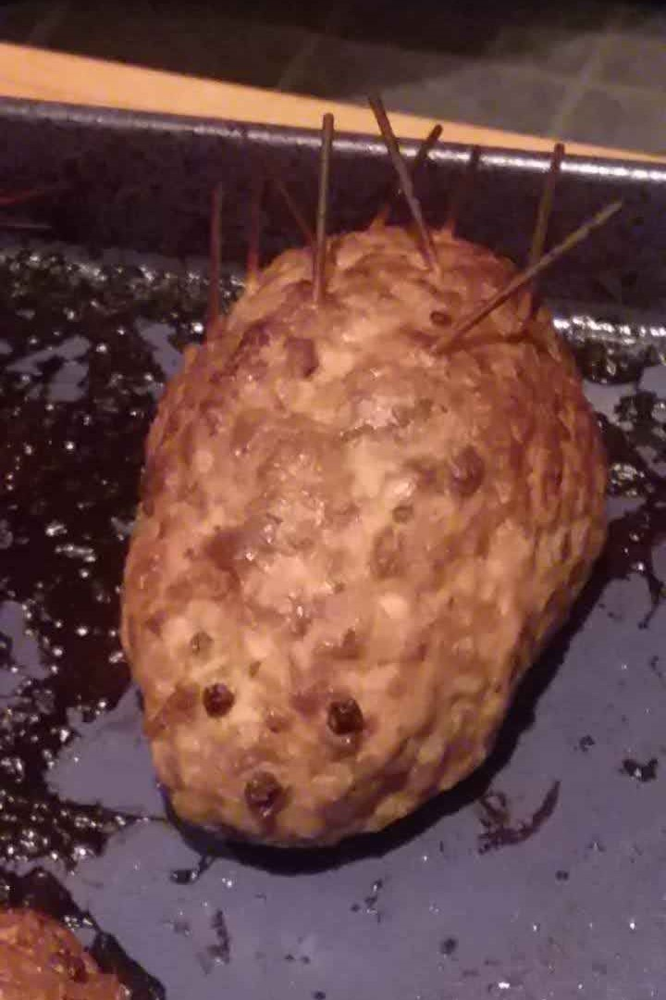

Ingredients
- 1 lb - Pork, ground
- 1 lb - Beef, ground
- 5 - hard boiled eggs, peeled
- 1 Tbs - Chubletsa (Blugarian Spice)
- Salt and Pepper to taste
Steps
- Mix the meat and spices in a bowl.
- form the meat around the egg in a tear drop shap and put on a baking sheet.
- Add pepercorns as seen fit for the eyes and nose.
- Add raw noodles to the back for the quills.
- Repeat steps 2-4 for all other porcupines.
- Put in the oven, and bake for 00 min at 000° degrees.